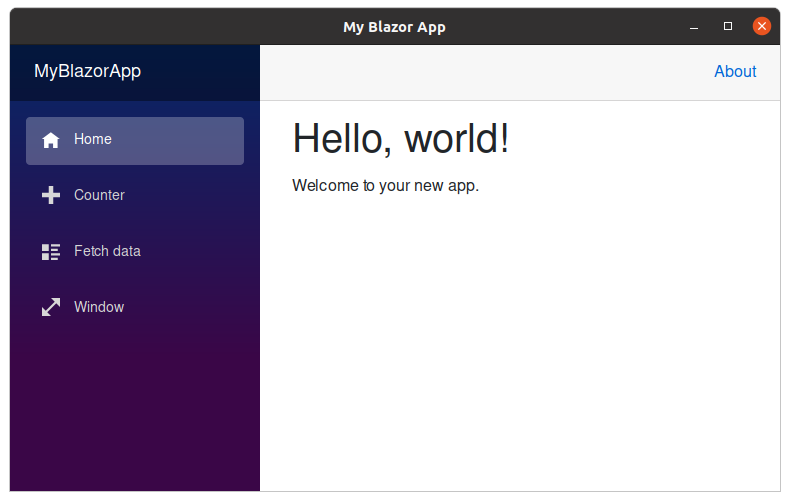
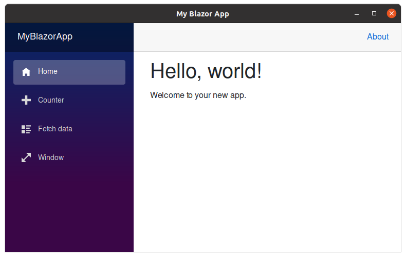

Howdy! Welcome to Photino. This is an unfinished pre-release version of the website. Please drop by again soon!
Build native, cross-platform desktop apps
that are lighter than light.
Photino is a lightweight open-source framework for building native,
cross-platform desktop applications with Web UI technology.
 

Native Applications
Photino enables developers to use fast, natively compiled languages like C#, C++, Java and more.
Use your favorite development frameworks like .NET Core 5.
Cross-Platform UI
Build desktop apps with Web UI frameworks, like Blazor, React, Angular, Vue, etc.!
Photino uses the OS’s built-in WebKit-based browser control for Windows, macOS and Linux.
Lightweight
Photino is the lightest cross-platform framework. Compared to Electron, a Photino app is up to 110 times smaller!
And it uses far less system memory too!
See comparison.
Get started
Download and try the Quick Start app to get started building apps with Photino. Select your OS below and follow the installation instructions. We added helpful comments to guide you from there.
# Clone the Quick Start application repository
$ git clone https://github.com/tryphotino/photino-quick-start
# Move into the Quick Start directory
$ cd photino-quick-start
# Build the application
$ dotnet build
You want to learn more? Read the documentation.
About Photino
Photino is an open-source project based on Steve Sanderson’s WebWindow, which was based on .NET Core 3.1 and a pre-release version of WebView2. The goal of Photino is to enable developers to use Web UI (HTML, JavaScript, CSS, etc.) in native applications across platforms instead of learning platform-specific UI technologies.
What is a Photino, you ask? It’s a hypothetical subatomic particle and fermion superpartner of the photon as predicted by supersymmetry. It’s a candidate for the lightest supersymmetric particle in the universe.
How does Photino work?
Photino is a collection of packages that can be used for different platforms and technologies. The different packages use Photino.Native as their base package. Photino.Native is a C++ (and Objective-C) wrapper around the OS’s built-in WebKit-based browser control in it. On Windows it uses the Chromium Edge based WebView2 control, on macOS it uses Safari’s WKWebView and on Linux it uses WebKitGTK+ 2. The Photino.Native package is compiled for each platform and distributed via NuGet.
Using the native browser control reduces the overall footprint of a Photino application since there is no need to bundle WebKit in the application. Photino is cross-platform because the application communicates with the wrapper in exactly the same way on any OS. This means developers only need one code base for all desktop platforms.
While we’re concentrating on using Photino with .NET Core 5, it could be used to build Web UIs for desktop applications written in any language, like C++, Go, Rust, Java, Objective-C and others!
Photino for .NET Core 5 and Blazor
Photino.NET adds support for .NET Core 5 to the Photino.Native package. With Photino.NET you can build desktop applications with .NET Core 5 backends and your Web Framework of choice. Since .NET Core 5 is cross-platform it is the perfect candidate for robust and reusable code that runs everywhere.
Photino.Blazor builds on top of Photino.NET and adds the ability to build your application without having to know JavaScript or TypeScript at all.
Photino vs. Electron
Download size comparison
- Photino does not require NodeJS for backend work.
- Photino is smaller and more lightweight. It does not require a bundled install of the Chromium engine or NodeJS runtime.
- If .NET Core 5 is already available on the OS the size difference is huge, up to 110 times smaller!
Memory Usage Comparison
- Photino uses far less memory than Electron.
- Especially on macOS and Linux where the native browser control uses far less memory than Chromium.
While Photino brings a lot of advantages over Electron, it is still in its early development and not as feature rich as Electron. But we’re inviting the open-source community to help improve Photino! You’re welcome to join and add missing functionality that you need, fix bugs and submit pull request.
What’s next?
We are committed to improve Photino and develop it into a fully-fledged framework.
Some of the items on our list are:
- Native menus
- Application icons
- In-app updates
- Built-in crash reporting
- .NET Core 6 Support
- iOS & Android Support
Who is behind Photino?
Photino is maintained by CODE Magazine with the help of the open-source community. Join the Photino community on GitHub at github.com/tryphotino.